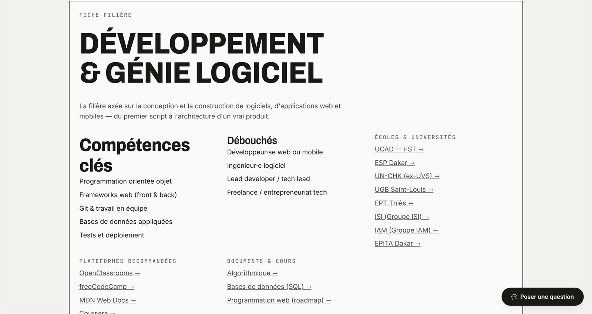
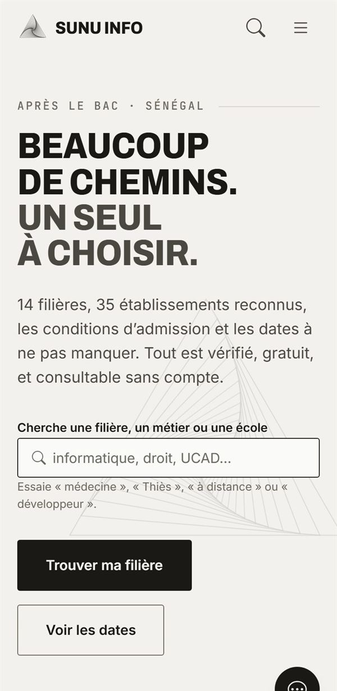

Sunu Info
Le portail d'orientation qui aide les bacheliers sénégalais à choisir leur filière, trouver leur école et ne rater aucune date importante.
- Mon rôle
- Conception, design et développement
- Période
- Depuis août 2026
- Technologies
- HTML, CSS, JavaScript, Supabase, Vercel
- Statut
- En ligne

Le problème
Après le bac, beaucoup d'élèves sénégalais ne savent pas vers quoi s'orienter. Les informations existent, mais elles sont dispersées : sites d'universités, réseaux sociaux, bouche-à-oreille. Comparer les filières, connaître les conditions d'admission ou les dates limites demande de chercher partout.
Je voulais un endroit unique, gratuit et consultable sans créer de compte, qui réponde aux vraies questions d'un nouveau bachelier.
La solution
Sunu Info rassemble tout le parcours après le bac : découvrir les filières, savoir lesquelles correspondent à son profil, trouver l'école, puis préparer son inscription.
-
14 fiches filières
Compétences, débouchés, écoles, plateformes de cours et documents, réunis sur une seule page par filière.
-
Test d'orientation
10 questions pour découvrir les filières adaptées à son profil, ses intérêts et ses ambitions.
-
Guides pratiques
Campusen, système LMD, séries du bac, bourse nationale, logement étudiant, ISEP et classes préparatoires.
-
Dates et outils
Calendrier académique, concours, calculateur de moyenne et recherche sur tout le site.
-
Espace personnel
Un compte facultatif pour enregistrer ses filières favorites, et un panneau d'administration pour gérer le contenu.
-
Assistant
Un assistant qui répond aux questions fréquentes par mots-clés et renvoie vers les bonnes pages.

Mes choix techniques
- HTML, CSS et JavaScript, sans framework Des pages légères qui se chargent vite, même avec une connexion mobile moyenne.
- Pensé d'abord pour le téléphone La plupart des bacheliers consultent le site sur mobile : menu en tiroir, boutons larges, textes lisibles.
- Supabase pour les comptes Connexion, profil et favoris, sans avoir à gérer moi-même un serveur de base de données.
- Vercel et GitHub pour la mise en ligne Chaque modification envoyée sur GitHub est publiée automatiquement.
- Respect de la vie privée Sans compte, la filière choisie et les favoris restent dans le navigateur du visiteur.

Ce que j'ai appris
Travailler proprement avec Git. Un jour, j'ai modifié une ancienne copie du site sans récupérer les dernières versions, et j'ai cassé la version en ligne. Depuis, je récupère toujours les derniers changements avant de travailler, et je sais revenir en arrière.
Changer d'hébergeur. Le site était d'abord sur Netlify. Je l'ai déplacé vers Vercel en adaptant les fonctions côté serveur, sans interrompre le service.
Penser à l'utilisateur. Le plus difficile n'était pas le code, mais d'organiser beaucoup d'informations pour qu'un élève trouve sa réponse en quelques clics.
Un projet du même genre ?
Je cherche un stage de développeur web et je réponds aux demandes de sites freelance.